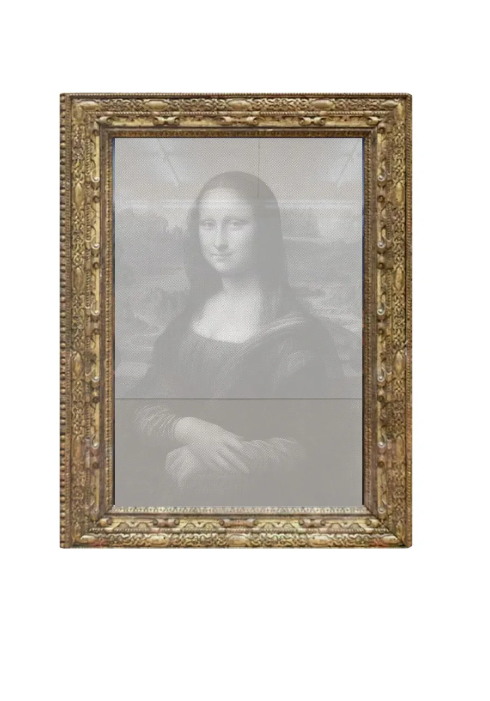
The Haunted Image
Through my ongoing development of screenprinting, I replace conventional ink with mirror pigment printed on acetate. These works attempt to resist digital capture and, in doing so, rebuild the relationship between the information carried by images and the audiences who encounter them.
As one of the fundamental media of information exchange in contemporary society, the image is increasingly mass-produced, over-edited, distorted, and AI-generated. The information it carries is spectacularized and gradually faded. Viewers will never fully succeed in photographing these works; what they capture instead is often an image of themselves taking a picture with a phone or camera.
By jamming the digital lens, I seek to call back a haunted truth and reconnect individuals with the reality they are facing.
通过对丝网印刷工艺的持续改良，我将传统印刷颜料替换为镜面颜料，并将其印刷在透明胶片上。这些作品试图抵抗数字化捕捉，并在这一过程中重新建立图像所承载的信息与观众之间的关系。
在当今社会，图像作为信息交换的基本媒介之一，早已被大量生产、过度编辑、扭曲，并被人工智能生成内容所充斥。图像所传递的信息也因此被景观化，并逐渐失去其原本的真实感。观众将无法完整地拍摄这些作品；他们最终得到的，往往只是一张自己正拿着手机或相机拍照的影像。
通过干扰数字镜头，我试图召回那种被幽灵般遮蔽的真实，并重新连接个体与其正在面对的现实。
The Haunted Image (2026)

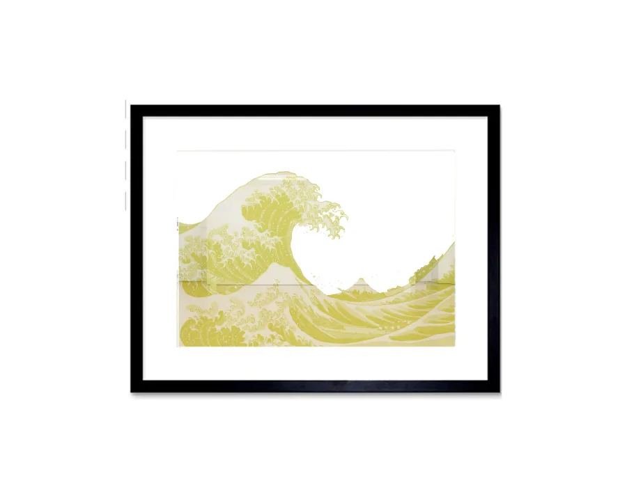
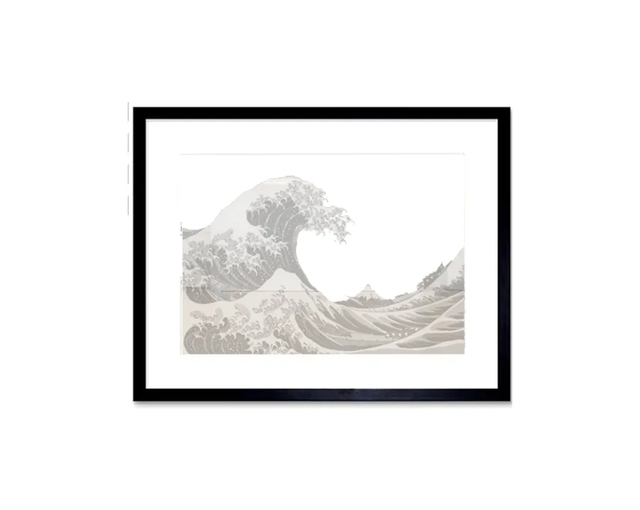
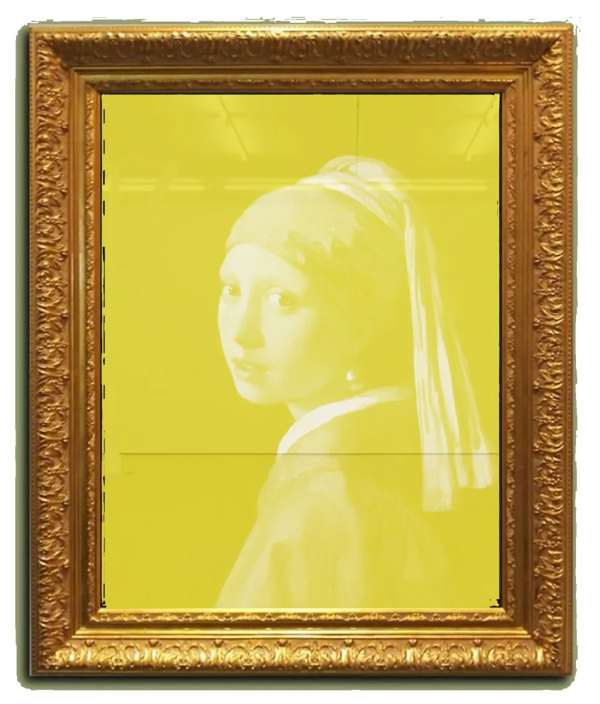
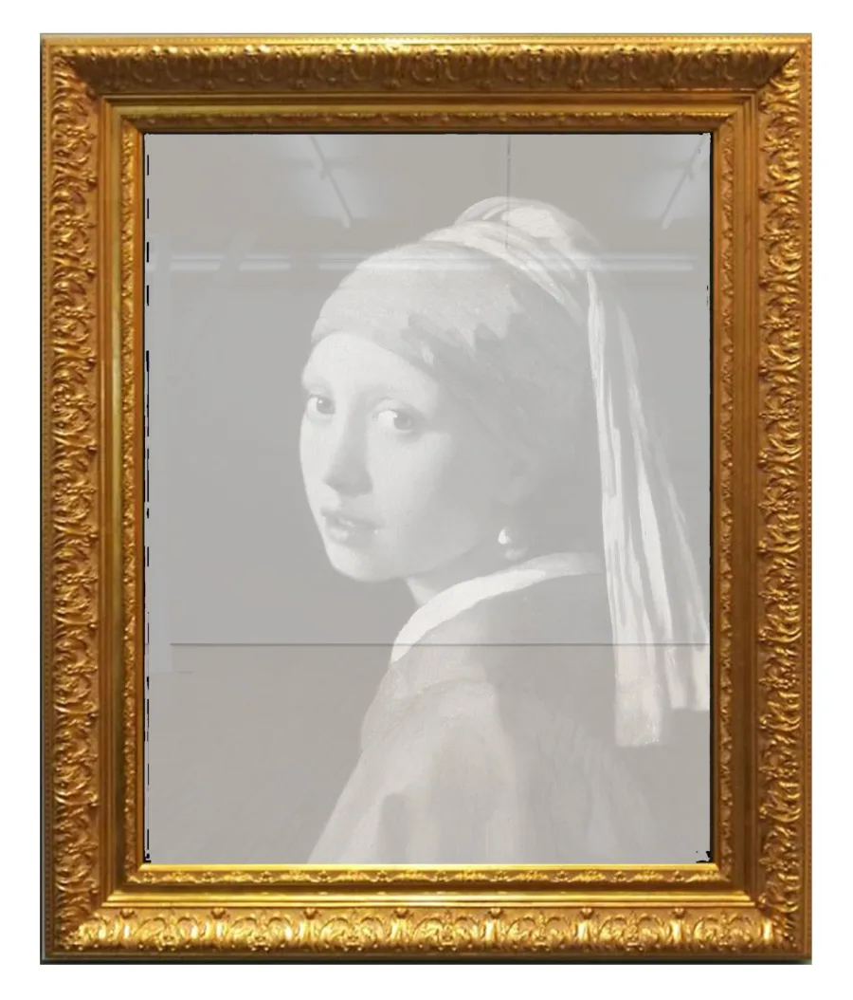
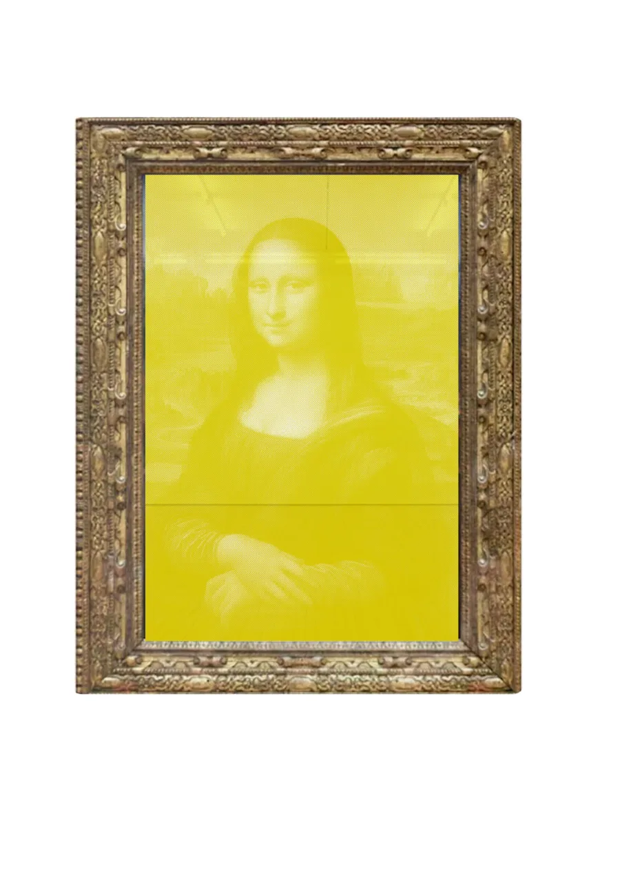
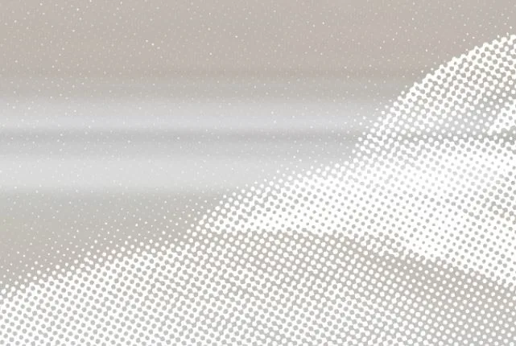
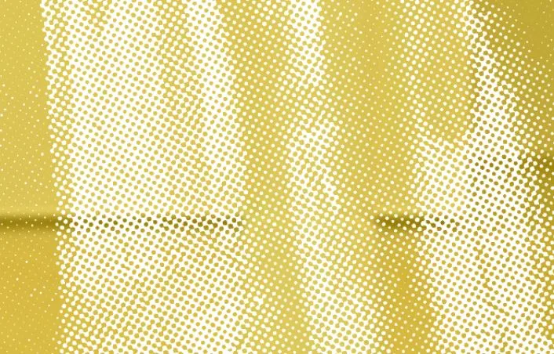
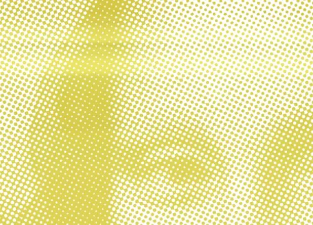
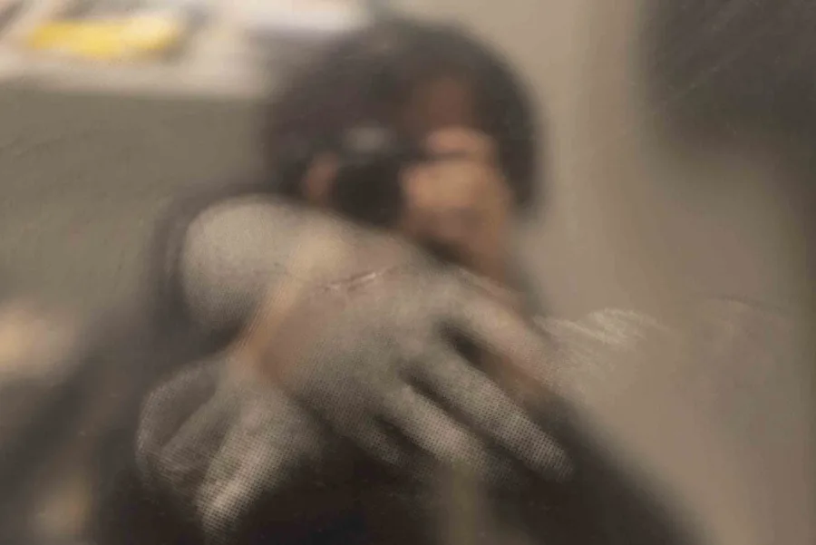
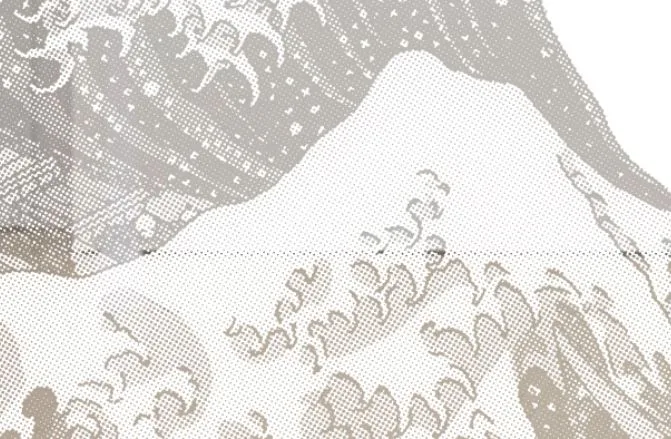
Making Conversation (2023)
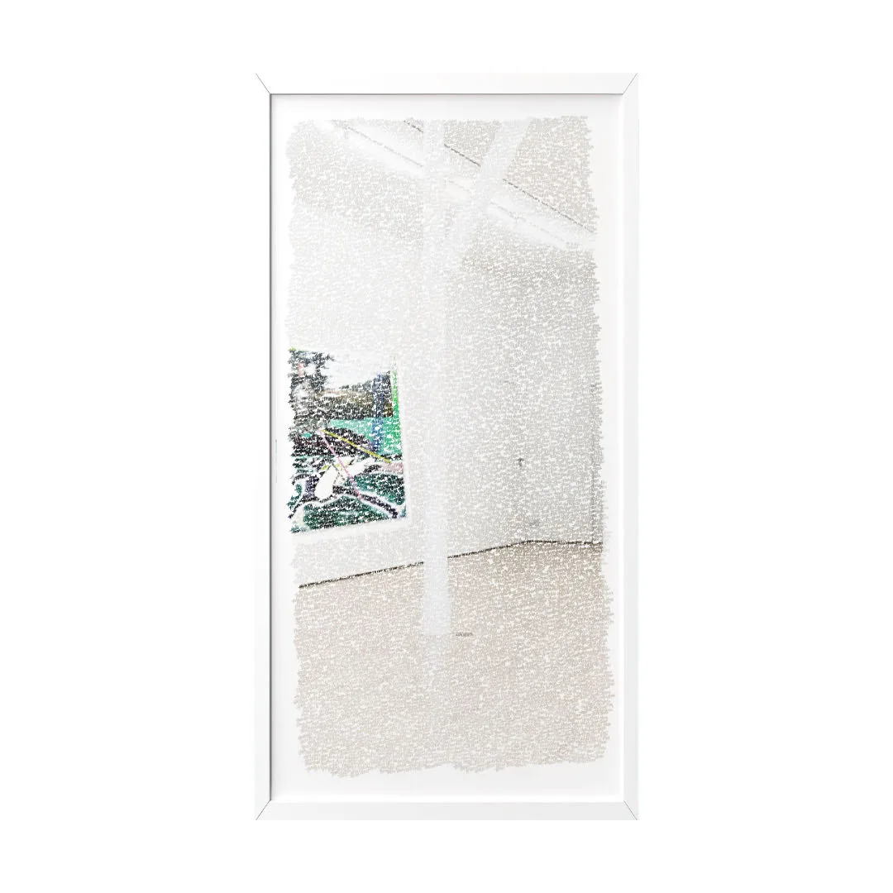
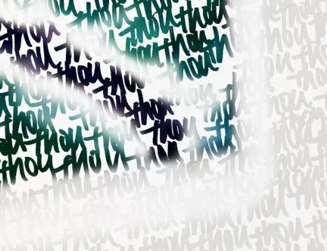
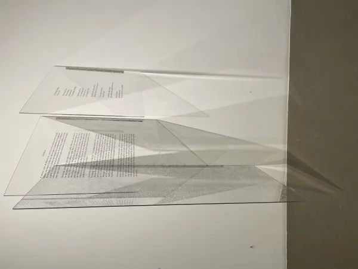
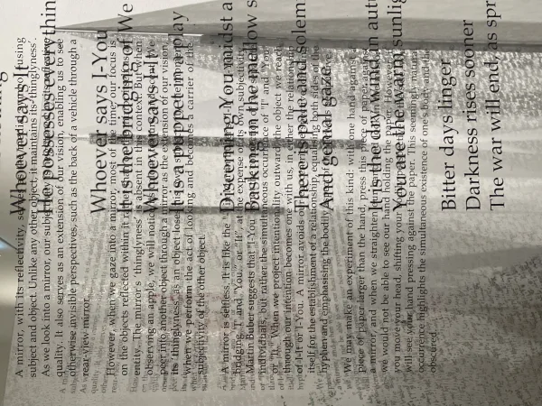
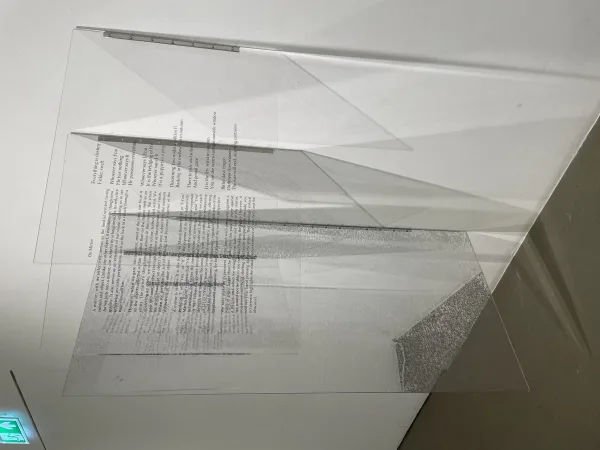
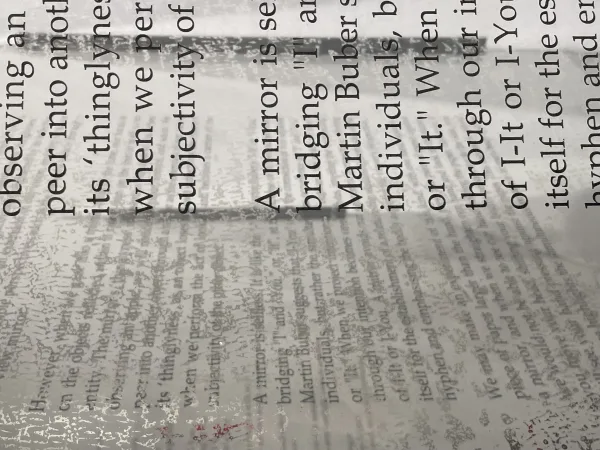
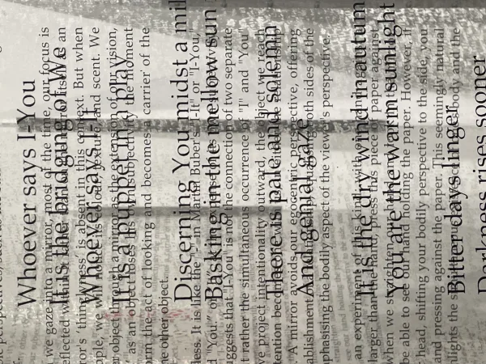
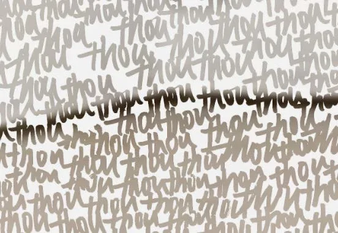